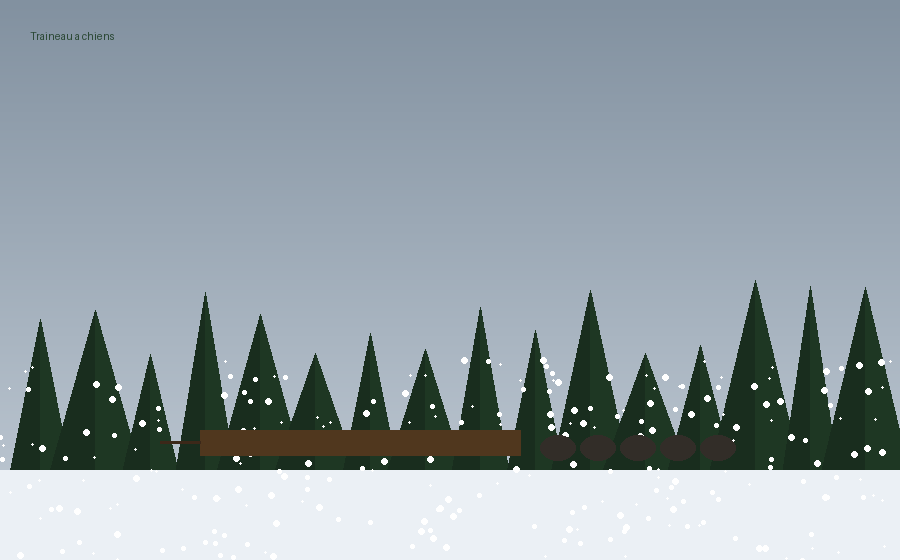
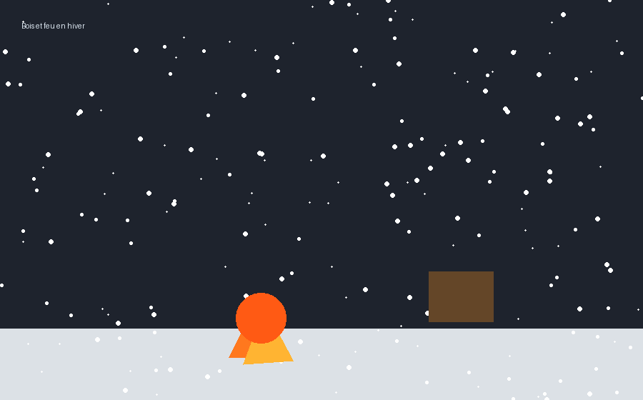

❄️ #79 — L'Hiver sur le territoirePartie 3 / 4
Transport, bois et nourriture d'hiver

Traîneaux, chiens et glace : l'hiver change toutes les routes.
Partie 3 — pas de doublon : #78 = comment allumer le feu. #76 / #77 = chasse et pêche en détail. Ici : transport, bois en hiver, ce qui change sous la glace seulement.
5. Transport dans la neige — traîneaux, chiens, portages
En hiver, tout se déplace différemment : le canot est remisé ; le traîneau et les chiens prennent le relais.
- Traîneau à chiens (Innu, Naskapi, Cris) : Attelage en éventail ou en ligne ; chiens entraînés dès leurs premiers mois à écouter la voix du meneur. On charge peaux, viande séchée, enfants, parfois le vieux qui ne marche plus assez vite. Pierre assiste à un départ à Schefferville : « Vingt pattes, une seule intention — suivre la piste et le vent. »
- Traîneau tiré à la main : Planche courbée, corde sur la poitrine ; pour le bois, les enfants, les provisions quand il n'y a pas assez de chiens.
- Le komatik (Inuit, nord) : Traîneau bas sur patins, adapté à la glace et à la neige dure ; motoneige ancienne avant l'ère des moteurs.
- Portage sur neige : Là où l'été on portait le canot sur les épaules, l'hiver on ouvre un sentier de raquettes et on y tire le chargement — parfois en plusieurs voyages. Les Atikamekw marquent les arbres pour retrouver le chemin au retour du blizzard.
6. Chercher le bois — nourrir le feu quand tout semble mouillé
Pierre ne répète pas la liturgie de l'allumage (#78). Il dit où trouver le bois quand la forêt est ensevelie :
- Bois mort debout : Épinettes et sapins secs encore sur pied — on les coupe, on les fend ; le cœur est sec même si l'écorce est givrée.
- Sous la neige : Tas de branches mortes au pied des bouleaux ; on creuse parfois un trou dans la neige jusqu'au sol pour un petit feu de survie à l'abri du vent.
- Écorce de bouleau : Brûle vite — pour entretenir un feu déjà allumé, pas pour l'allumer (voir #78).
- La veille du feu : La nuit, quelqu'un se lève pour ajouter une bûche ; le feu qui meurt en hiver peut coûter des vies. Les familles dorment en cercle, le bois empilé à portée de main.
Renvoi : pour l'allumage sacré (friction, tabac, prière), voir le Carnet n° 3 — Le Feu sans allumettes (article #78).

Bois sec et feu vivant : survivre la nuit québécoise.
7. Sous la glace et dans la poudreuse — ce qui change en hiver
Reportages complets : #76 Chasse · #77 Pêche. En hiver seulement :
- Innu : Caribou en harde sur raquettes ; castor au trou dans la glace.
- Atikamekw : Orignal en forêt profonde ; viande partagée au camp avant qu'elle ne gèle dehors.
- Mi'kmaq : Phoque sur la glace côtière — silence absolu.
- Hurons-Wendat : Réserves de viande et poisson séchés ; complément quand la clairière le permet.
- Inuit : Trou dans la glace ; iglou ; cycle alimentaire par le froid.
- Cris : Caribou migrateur ; hareng sous la glace.
Tabac, prière, partage — l'hiver rend le protocole plus urgent, sans le réexpliquer ici.